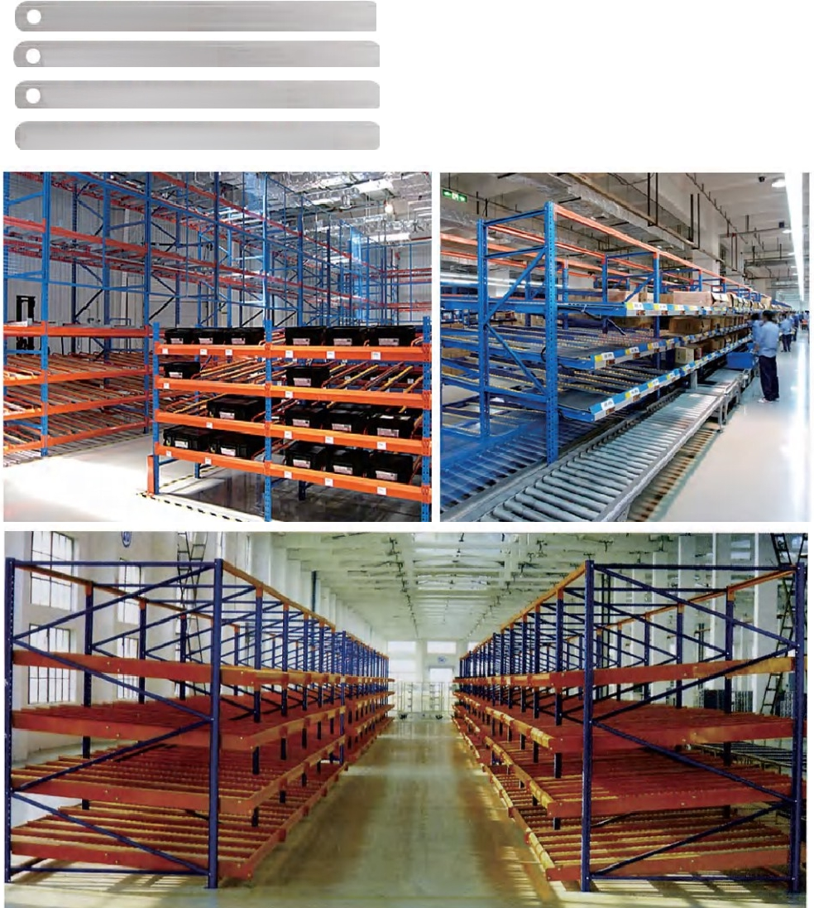
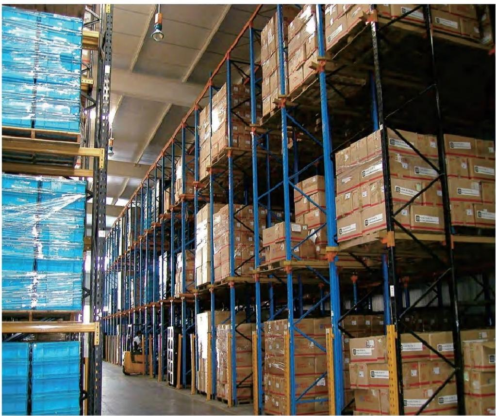
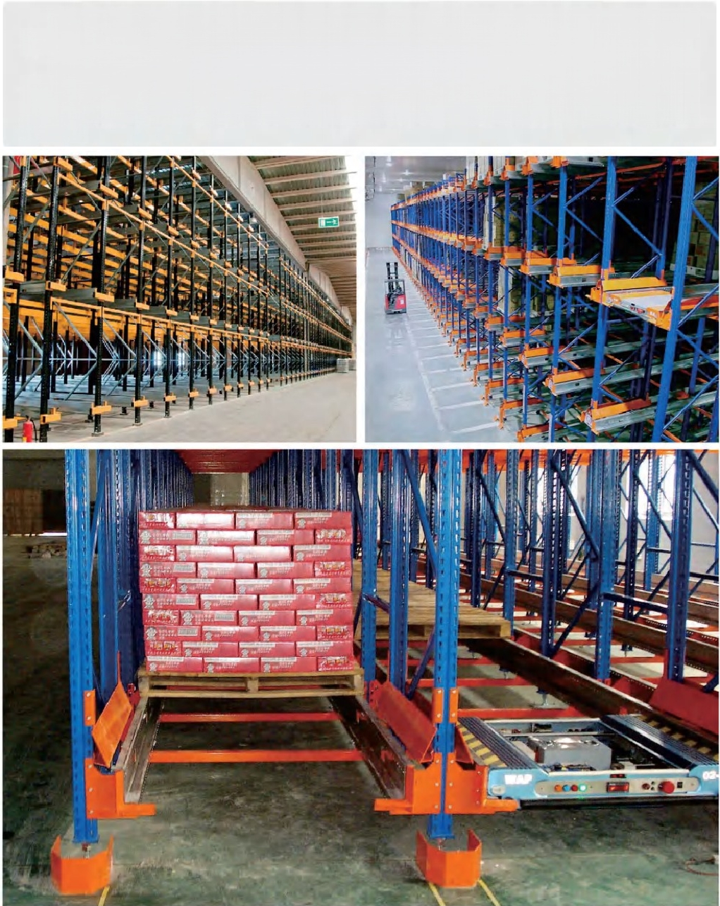
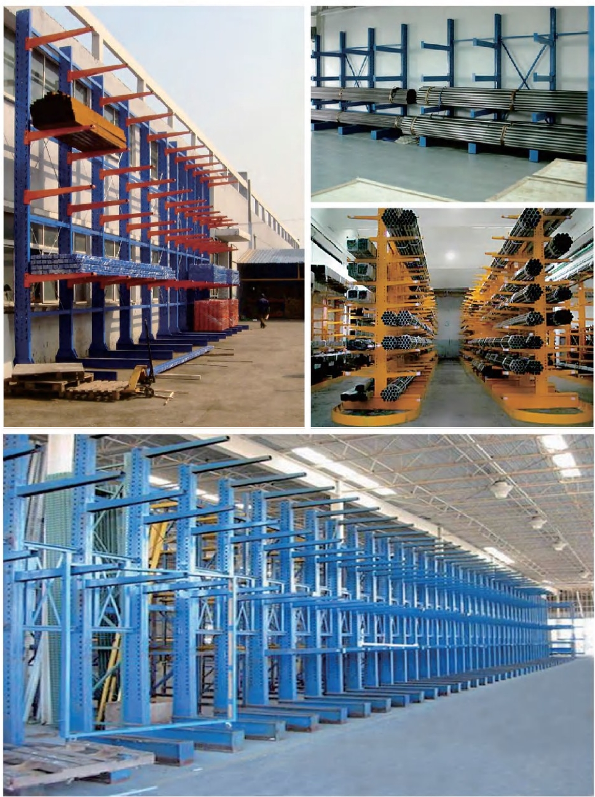
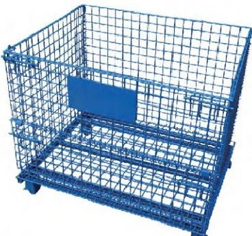
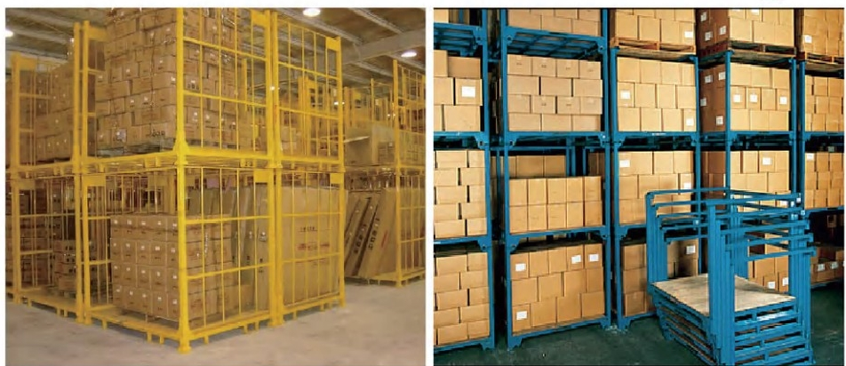
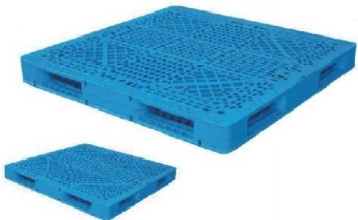

仓储设备
产品目录。Storage equipment
catalog.
从基础货架到高密度自动化场景，按存储方式、荷载与作业动线选择产品。From everyday racking to high-density automated storage, choose by load, flow and storage method.
仓储货架系统Racking systems
托盘、人工拣选与高密度存储Pallet, manual picking and high-density storage

重型货架Pallet racking
多 SKU、高频出入库的直接存取系统，承载 500–3000 kg。Direct-access storage for many SKUs and frequent movements, 500–3000 kg stated load range.
↗
中型货架Medium-duty shelving
适合纸箱、料箱、零配件的人工拣货，承载 50–350 kg。Manual picking for cartons, totes and parts, 50–350 kg per level stated.
↗
贯通货架Drive-in racking
取消排间独立通道，空间利用率可达 75–80%，适合批量托盘。High-density pallet lanes with stated 75–80% space use for batch pallet storage.
↗穿梭货架Radio shuttle racking
穿梭车在轨道内搬运托盘，兼顾高密度与冷库作业。Rail-based shuttle movement for high density and cold-storage operations.
↗
悬臂货架Cantilever racking
面向管材、型材、板材等长料，承载 500–1500 kg。Side-access storage for pipes, profiles and panels, 500–1500 kg stated load range.
↗
堆垛架Stacking racks
可移动单元化仓储器具，常规承载 500–2000 kg。Movable unit storage with a stated regular load range of 500–2000 kg.
↗钢结构与夹层Steel structures
扩展仓库的垂直空间Expand vertical warehouse volume

物流周转器具Logistics equipment
从存储单元到周转载具Storage units and handling carriers

钢托盘Steel pallets
动载 1–3 吨、静载 4–6 吨，适配货架与自动化设备。1–3 t dynamic and 4–6 t static loads stated, for racks and automated equipment.
↗
仓储笼Storage cages
可堆垛、折叠、上架，常规动载 500–1200 kg。Stackable, foldable and rackable, with 500–1200 kg stated regular dynamic load.
↗
塑料托盘Plastic pallets
HDPE / PP 标准化托盘，动载 0.5–2 吨，静载 1–6 吨。Standardized HDPE / PP pallets, with 0.5–2 t dynamic and 1–6 t static loads stated.
↗